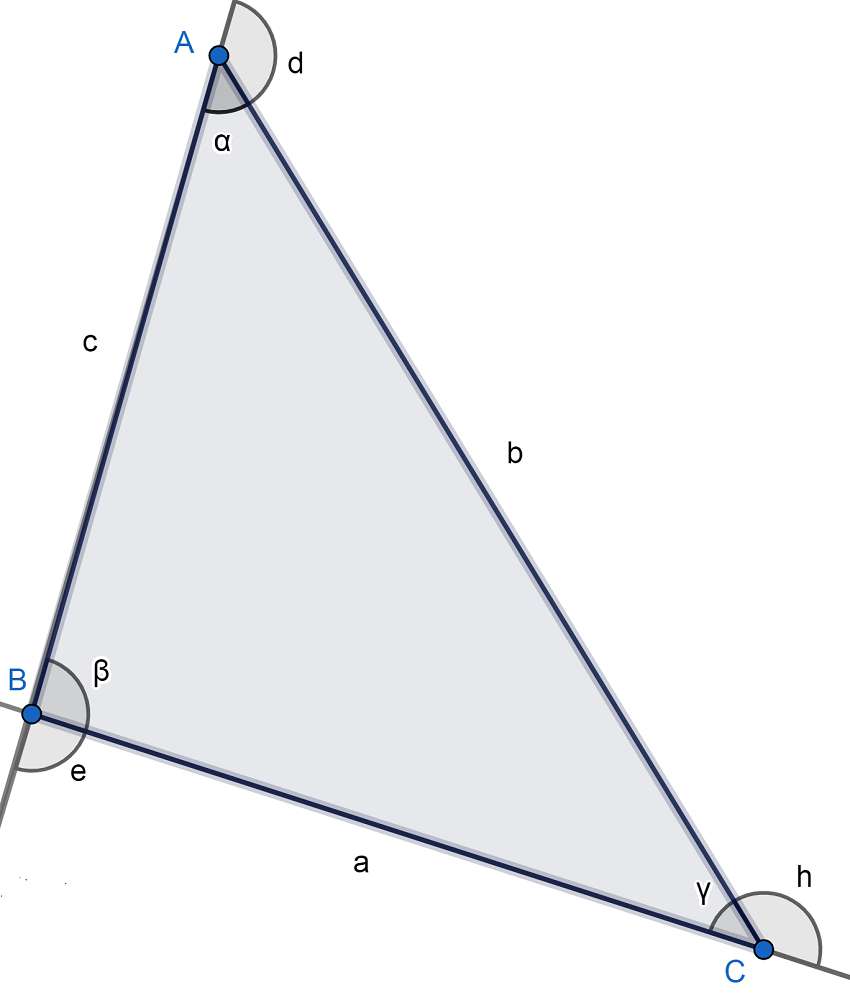

El triángulo obtusángulo es aquel donde uno de sus ángulos interiores es obtuso, es decir, mayor que 90º. Asimismo, los otros dos ángulos son agudos, lo que significa que miden menos de 90º.
Este tipo de triángulo es un caso muy particular dentro de los tipos de triángulo según la medida de sus ángulos internos. Cabe observar que el triángulo es un polígono que no puede tener más de un ángulo interior obtuso porque sus tres ángulos interiores deben sumar 180º. Entonces, si uno mide 91, por ejemplo, los otros dos deben sumar 89º. En este punto, vale recordar que un polígono es una figura geométrica bidimensional que se constituye de la unión de distintos puntos (que no formen parte de la misma línea) mediante segmentos de recta. De ese modo, se construye un espacio cerrado.
Vértices: A, B, C.
Lados: AB, BC, AC.
Ángulos interiores: ∝, β, γ. Todos suman 180º.
Ángulos exteriores: e, d, h. Cada uno es suplementario al ángulo interior del mismo vértice. Es decir, se cumple que: 180º= ∝+d= β+e= h+γ. Lo anterior implica que dos de los ángulos exteriores son obtusos y uno es agudo (el que se corresponde con el ángulo interior obtuso). Si β mide 92º, por ejemplo, e mediría 88º.

Área(A): En este caso, nos basamos en la fórmula de Herón donde s es el semiperímetro, es decir, P/2.
Perímetro(P): Es la suma de los lados que, observando la figura de arriba donde señalamos los elementos, sería: P = a + b + c.